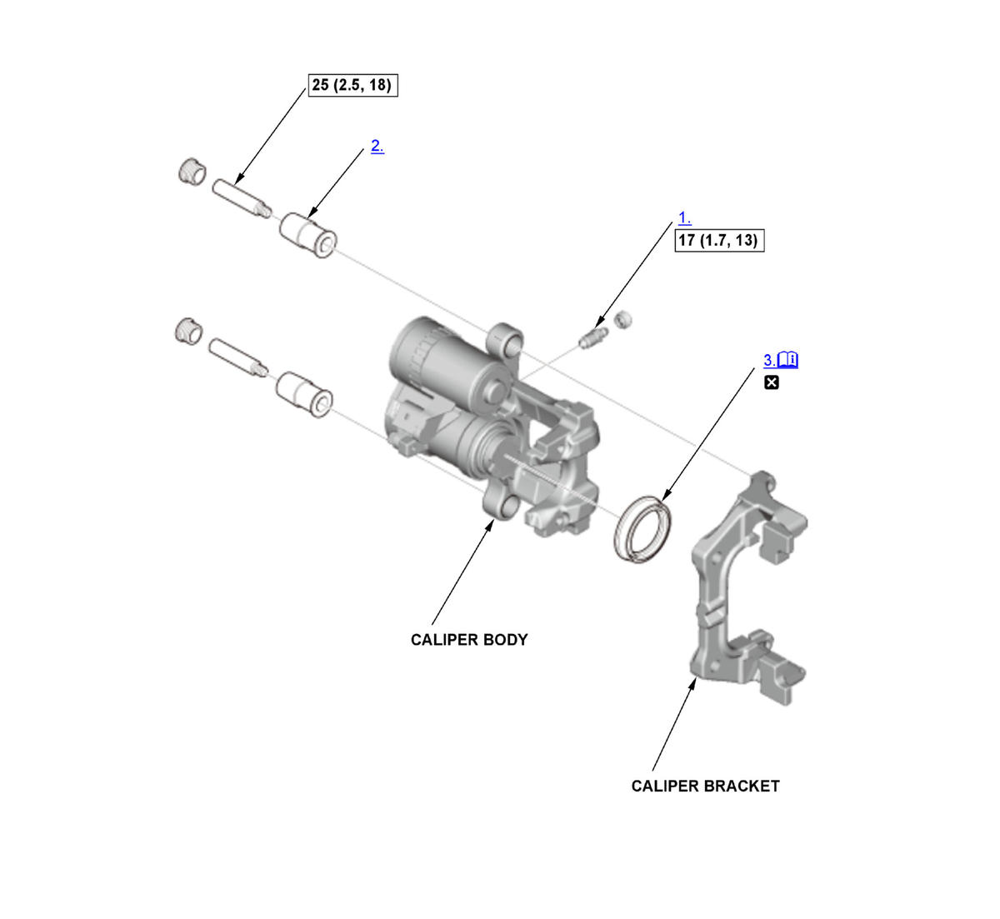

Rear Brake Caliper Overhaul: Reassembly: Procedure
NOTE:
Numbered call-outs in figure pertain to list numbers in following procedure.

Courtesy of HONDA, U.S.A., INC. |
Detailed information, notes, and precautions |
 |
Torque: N.m (kgf.m, lbf.ft) |
 |
Replace |
- Bleed Screw - Install
- Pin Bushing - Install
- Piston Boot - Install
1. Apply a thin coat of Honda silicone grease (P/N 08C30-B0234M) or ATE brake cylinder paste to inner of the piston boot (A). 2. Install the piston boot onto the piston.
3. Install the commercially available brake caliper piston compressor tool (A) on the caliper body (B). 4. Press in the piston with the brake caliper piston compressor tool.
NOTE:
- Do not press the piston diagonally, and do not press it forcibly.
- Be careful not to damage the piston boot when pressing in the piston.
5. Set the piston boot in place on the caliper body (A). 6. Install the commercially available brake caliper piston compressor tool (B) and the rear brake caliper dust boot installer (C).
7. Press in the piston boot with the brake caliper piston compressor tool and the rear brake caliper dust boot installer.
NOTE:
- Make sure that the piston boot is properly positioned into the groove of the caliper body.
- Be careful not to damage the piston boot.